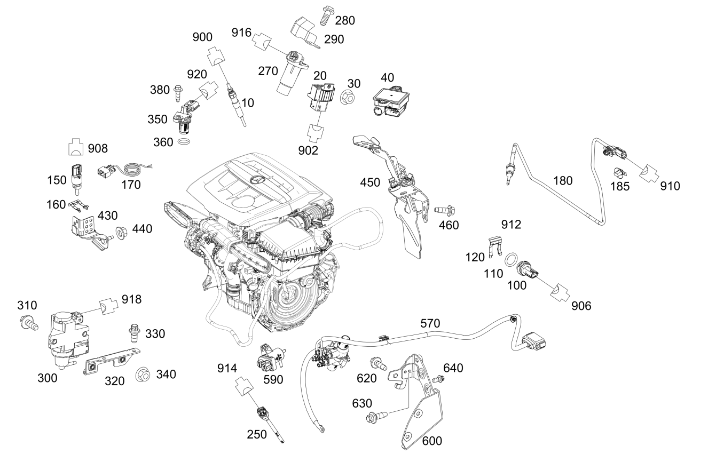

| № | Артикул | Название | Кол. | Примечание |
|---|---|---|---|---|
| 10 | A 000 159 16 00 | Свеча накаливания (GLOW PLUG) | 4 | |
| 20 | A 607 900 01 00 | Блок управления (CONTROL UNIT) | 1 | Выходной каскад системы накаливания |
| 30 | A 000 990 43 37 | Шестигранная гайка (HEXAGON NUT) | 1 | Крепление блока управления; M6 |
| 30 | A 415 990 32 50 | Гайка с фланцем (HEXAGON NUT WITH FLANGE) | 1 | Крепление блока управления; M6 |
| 40 | Q 0000000001 | ВАЖНАЯ ИНФОРМАЦИЯ | 1 | Деталь см.: 54/081 |
| 80 | A 607 905 10 00 | Датчик температуры (TEMPERATURE SENSOR) | 1 | Для измерения температуры ОГ после клапана рециркуляции ОГ низкого давления |
| 100 | A 607 905 12 00 | Датчик температуры (TEMPERATURE SENSOR) | 1 | Корпус термостата; GK5\+MB5\+(MO1/MO2)/MO3\+GK6\+MB5; |
| 110 | A 607 997 13 45 | - Кольцевая прокладка (O-RING) | 1 | |
| 120 | A 607 991 01 70 | Удерживающая скоба (RETAINING CLAMP) | 1 | Датчик температуры |
| 150 | A 607 905 02 00 | Датчик давления (PRESSURE SENSOR) | 1 | Давление ОГ |
| 150 | A 607 905 23 00 | Датчик давления (PRESSURE SENSOR) | 1 | Давление ОГ |
| 150 | A 607 905 02 00 | Датчик давления (PRESSURE SENSOR) | 1 | Давление ОГ |
| 150 | A 607 905 23 00 | Датчик давления (PRESSURE SENSOR) | 1 | Давление ОГ |
| 150 | A 607 905 23 00 | Датчик давления (PRESSURE SENSOR) | 1 | Давление ОГ |
| 150 | A 607 905 26 00 | Датчик давления (PRESSURE SENSOR) | 1 | Давление ОГ |
| 160 | A 607 991 00 70 | Удерживающая скоба (RETAINING CLAMP) | 1 | Датчик давления |
| 160 | A 607 991 00 70 | Удерживающая скоба (RETAINING CLAMP) | 1 | Датчик давления |
| 160 | A 607 991 00 70 | Удерживающая скоба (RETAINING CLAMP) | 1 | Датчик давления |
| 170 | A 415 540 16 01 | Электрический жгут (ELECTRICAL WIRING HARNESS) | 1 | Только для ремонтных целей |
| 180 | A 607 905 00 00 | Датчик температуры (TEMPERATURE SENSOR) | 1 | Перед турбокомпрессором (MO1/MO2/MO3)\+MB5 |
| 180 | A 607 905 00 00 | Датчик температуры (TEMPERATURE SENSOR) | 1 | Перед турбокомпрессором |
| 180 | A 415 905 52 00 | Датчик температуры (TEMPERATURE SENSOR) | 1 | Перед турбокомпрессором |
| 180 | A 607 905 37 00 | Датчик температуры (TEMPERATURE SENSOR) | 1 | Перед турбокомпрессором (MO1/MO2/MO3)\+MB6 |
| 180 | A 415 905 87 00 | Датчик давления и темп. (PRESSURE + TEMP. SENSOR) | 1 | Датчик давления |
| 180 | A 415 905 87 00 | Датчик давления и темп. (PRESSURE + TEMP. SENSOR) | 1 | Датчик давления |
| 180 | A 607 905 00 00 | Датчик температуры (TEMPERATURE SENSOR) | 1 | Выпускной коллектор |
| 180 | A 607 905 27 00 | Датчик температуры (TEMPERATURE SENSOR) | 1 | Выпускной коллектор |
| 180 | A 607 905 37 00 | Датчик температуры (TEMPERATURE SENSOR) | 1 | Выпускной коллектор |
| 185 | A 282 991 02 70 | - Крепежная скоба (FASTENING CLIP) | 1 | Датчик температуры |
| 185 | A 282 991 02 70 | - Крепежная скоба (FASTENING CLIP) | 1 | Датчик температуры |
| 190 | A 607 905 20 00 | Датчик температуры (TEMPERATURE SENSOR) | 1 | перед каталитическим нейтрализатором ОГ |
| 190 | A 608 905 16 00 | Датчик температуры (TEMPERATURE SENSOR) | 1 | Система рециркуляции ОГ |
| 190 | A 607 905 20 00 | Датчик температуры (TEMPERATURE SENSOR) | 1 | Система рециркуляции ОГ |
| 190 | A 608 905 16 00 | Датчик температуры (TEMPERATURE SENSOR) | 1 | Система нейтрализации ОГ |
| 200 | A 607 905 05 00 | Датчик давления (PRESSURE SENSOR) | 1 | Дифференциальное давление B28/8 |
| 200 | A 607 905 05 00 | Датчик давления (PRESSURE SENSOR) | 1 | Дифференциальное давление GK5\+MB5\+(MO1/MO2)/MO3\+GK6\+MB5; B28/8 |
| 200 | A 626 905 22 00 | Датчик давления (PRESSURE SENSOR) | 1 | Дифференциальное давление GK5\+MB6\+(MO1/MO2)/MO3\+GK6\+MB6 |
| 200 | A 626 905 22 00 | Датчик давления (PRESSURE SENSOR) | 1 | Дифференциальное давление B28/8 |
| 200 | A 626 905 22 00 | Датчик давления (PRESSURE SENSOR) | 1 | Дифференциальное давление GK7\+MB6\+(MO2/MO3); B28/8 |
| 210 | A 607 990 42 01 | Винт 6-гранный с фланцем (HEX. HEAD SCREW W FLANGE) | 1 | Датчик к держателю |
| 210 | A 415 990 07 04 | Винт с полукругл.головой (PAN HEAD SCREW W COLLAR) | 1 | Датчик к держателю; M5X28 |
| 230 | A 607 905 29 00 | Датчик температуры (TEMPERATURE SENSOR) | 1 | Для измерения температуры ОГ перед клапаном рециркуляции ОГ высокого давления |
| 230 | A 607 905 29 00 | Датчик температуры (TEMPERATURE SENSOR) | 1 | Для измерения температуры ОГ перед клапаном рециркуляции ОГ высокого давления |
| 240 | A 415 542 04 00 | Лямбда-зонд (LAMBDA SENSOR) | 1 | После катализатора GK5\+MB6\+(MO1/MO2); |
| 240 | A 415 905 57 00 | Датчик NOx (NOX SENSOR) | 1 | Лямбда\-зонд после катализатора MO3\+GK6\+MB6; |
| 250 | A 607 905 11 00 | Датчик уровня (FILL LEVEL SENSOR) | 1 | Контроль уровня моторного масла |
| 250 | A 607 905 21 00 | Датчик уровня (FILL LEVEL SENSOR) | 1 | Контроль уровня моторного масла |
| 250 | A 607 905 30 00 | Датчик уровня (FILL LEVEL SENSOR) | 1 | Контроль уровня моторного масла |
| 270 | A 607 905 38 00 | Датчик положения (POSITION SENSOR) | 1 | Датчик положения коленвала |
| 280 | N 910143 006002 | Винт с 6-гр. глвк (HEXALOBULAR SCREW) | 1 | Датчик положения коленвала к держателю; M6X20 |
| 280 | A 415 990 14 01 | Винт 6-гранный с фланцем (HEX. HEAD SCREW W FLANGE) | 1 | Датчик положения коленвала к держателю; M6X20 |
| 280 | A 415 990 37 11 | Саморез с 6-гр. головкой (SELF-TAP. HEX. HEAD SCREW) | 1 | Датчик положения коленвала к держателю; M6X25 |
| 290 | A 607 153 01 75 | Защитный экран (PROTECTIVE METAL SHEET) | 1 | Датчик положения коленвала |
| 300 | A 607 153 00 28 | Преобразователь давления (PRESSURE TRANSDUCER) | 1 | |
| 300 | Q 0000000001 | ВАЖНАЯ ИНФОРМАЦИЯ | 1 | Деталь см.: 21/050 |
| 310 | N 910143 006001 | Винт с 6-гр. глвк (HEXALOBULAR SCREW) | 2 | Преобразователь давления к кронштейну; M6X16 |
| 320 | A 607 151 01 40 | Держатель (HOLDER) | 1 | Преобразователь давления |
| 320 | A 607 151 02 40 | Держатель (HOLDER) | 1 | Преобразователь давления |
| 330 | N 910142 006000 | Винт с 6-гр. глвк (HEXALOBULAR SCREW) | 2 | Держатель к демпферному фильтру; M6X12 |
| 340 | A 415 990 37 50 | Гайка с фланцем (HEXAGON NUT WITH FLANGE) | 2 | Держатель к корпусу; M6 |
| 340 | A 415 990 37 50 | Гайка с фланцем (HEXAGON NUT WITH FLANGE) | 2 | Преобразователь давления к кронштейну; M6 |
| 350 | A 607 905 07 00 | Датчик положения (POSITION SENSOR) | 1 | Крышка клапанного механизма |
| 360 | A 607 997 01 45 | - Кольцевая прокладка (O-RING) | 1 | |
| 380 | A 415 990 41 01 | Винт 6-гранный с фланцем (HEX. HEAD SCREW W FLANGE) | 1 | Датчик к крышке клапанного механизма; M6X19 |
| 400 | A 607 905 09 00 | Датчик температуры (TEMPERATURE SENSOR) | 1 | Перед сажевым фильтром |
| 410 | A 415 991 04 71 | Крепежная клипса (FASTENING CLIP) | 1 | Датчик температуры |
| 430 | A 607 140 01 40 | Держатель (HOLDER) | 1 | К турбокомпрессору |
| 430 | A 607 140 01 40 | Держатель (HOLDER) | 1 | К турбокомпрессору |
| 430 | A 607 140 01 40 | Держатель (HOLDER) | 1 | К турбокомпрессору I7F\+(GK5\+MB6\+(MO1/MO2)/MO3\+GK6\+MB6); |
| 440 | A 415 990 17 50 | Гайка с фланцем (HEXAGON NUT WITH FLANGE) | 1 | Держатель к проушине для вывешивания; M6 |
| 440 | A 415 990 17 50 | Гайка с фланцем (HEXAGON NUT WITH FLANGE) | 1 | Держатель к проушине для вывешивания; M6 |
| 450 | A 607 140 00 40 | Держатель (HOLDER) | 1 | К впускному воздуховоду I7F\+(GK5\+MB6\+(MO1/MO2)/MO3\+GK6\+MB6); |
| 450 | A 607 140 03 40 | Держатель (HOLDER) | 1 | К впускному воздуховоду I7F\+(GK5\+MB6\+(MO1/MO2)/MO3\+GK6\+MB6); |
| 450 | A 607 140 04 40 | Держатель (HOLDER) | 1 | К впускному воздуховоду I7F\+(GK5\+MB6\+(MO1/MO2)/MO3\+GK6\+MB6); |
| 450 | A 415 490 08 00 | Держатель (HOLDER) | 1 | К впускному воздуховоду |
| 450 | A 607 151 00 00 | Держатель (HOLDER) | 1 | К впускному воздуховоду I7F\+(GK5\+MB6\+(MO1/MO2)/MO3\+GK6\+MB6); |
| 450 | A 607 140 04 40 | Держатель (HOLDER) | 1 | К впускному воздуховоду |
| 460 | A 607 990 29 01 | Винт 6-гранный с фланцем (HEX. HEAD SCREW W FLANGE) | 3 | Держатель к впускному воздуховоду; M6X17 |
| 500 | A 010 542 26 18 | Лямбда-зонд (LAMBDA SENSOR) | 1 | Перед сажевым фильтром |
| 500 | A 010 542 26 18 | Лямбда-зонд (LAMBDA SENSOR) | 1 | перед каталитическим нейтрализатором ОГ MB5 |
| 500 | A 415 542 03 00 | Лямбда-зонд (LAMBDA SENSOR) | 1 | |
| 500 | A 010 542 41 18 | Лямбда-зонд (LAMBDA SENSOR) | 1 | Перед сажевым фильтром |
| 500 | A 010 542 41 18 | Лямбда-зонд (LAMBDA SENSOR) | 1 | перед каталитическим нейтрализатором ОГ MB6 |
| 500 | A 010 542 41 18 | Лямбда-зонд (LAMBDA SENSOR) | 1 | После сажевого фильтра |
| 510 | A 607 159 00 41 | Держатель (HOLDER) | 1 | Лямбда\-зонд |
| 520 | A 415 991 00 70 | Пружинная скоба (SPRING CLIP) | 1 | Кабель лямбда\-зонда |
| 530 | A 607 990 00 17 | Резьбовая пробка (SCREW PLUG) | 1 | Заглушка лямбда\-зонда |
| 540 | A 607 159 01 40 | Держатель (HOLDER) | 1 | Лямбда\-зонд |
| 550 | A 000 541 01 40 | Держатель (HOLDER) | 1 | Кабель лямбда\-зонда к держателю; 18 X 24 MM |
| 560 | N 910143 006001 | Винт с 6-гр. глвк (HEXALOBULAR SCREW) | 1 | Держатель лямбда\-зонда; M6X16 |
| 570 | A 607 150 00 54 | Нагревательный элемент (HEATING ELEMENT) | 1 | Дополнительный подогреватель |
| 590 | A 626 906 02 00 | Переключающий клапан (SWITCHOVER VALVE) | 1 | |
| 600 | A 607 150 02 73 | Держатель (HOLDER) | 1 | Нагревательный элемент |
| 620 | N 000000 000276 | Винт с 6-гр. глвк (HEXALOBULAR SCREW) | 2 | Держатель к корпусу; M8X20 |
| 630 | N 000000 000276 | Винт с 6-гр. глвк (HEXALOBULAR SCREW) | 1 | Держатель к блоку цилиндров; M8X20 |
| 640 | N 910142 006000 | Винт с 6-гр. глвк (HEXALOBULAR SCREW) | 2 | Нагревательный элемент к держателю; M6X12 |
| 900 | A 033 545 10 26 | Картер сцепления (CLUTCH HOUSING) | 1 | Свеча накаливания R9/1; 1\-PIN |
| 900 | A 033 545 10 26 | Картер сцепления (CLUTCH HOUSING) | 1 | Свеча накаливания R9/2; 1\-PIN |
| 900 | A 033 545 10 26 | Картер сцепления (CLUTCH HOUSING) | 1 | Свеча накаливания R9/3; 1\-PIN |
| 900 | A 033 545 10 26 | Картер сцепления (CLUTCH HOUSING) | 1 | Свеча накаливания R9/4; 1\-PIN |
| 902 | A 032 545 95 26 | Картер сцепления (CLUTCH HOUSING) | 1 | Система накаливания |
| 906 | A 032 545 61 26 | Картер сцепления (CLUTCH HOUSING) | 1 | Датчик температуры перед турбокомпрессором B16/10; 2\-PIN |
| 908 | A 032 545 66 26 | Картер сцепления (CLUTCH HOUSING) | 1 | Датчик давления после турбокомпрессора B16/7; 4\-PIN |
| 910 | A 032 545 58 26 | Картер сцепления (CLUTCH HOUSING) | 1 | Датчик температуры системы рециркуляции ОГ B157/2; 2\-PIN |
| 912 | A 033 545 96 26 | Картер сцепления (CLUTCH HOUSING) | 1 | Датчик дифференциального давления B28/8; 3\-PIN |
| 914 | A 034 545 01 26 | Картер сцепления (CLUTCH HOUSING) | 1 | Датчик уровня масла B40; 2\-PIN |
| 916 | A 032 545 60 26 | Картер сцепления (CLUTCH HOUSING) | 1 | Датчик положения коленвала L5; 2\-PIN |
| 918 | A 034 545 01 26 | Картер сцепления (CLUTCH HOUSING) | 1 | Клапан регулирования давления наддува Y77; 2\-PIN |
| 920 | A 032 545 63 26 | Картер сцепления (CLUTCH HOUSING) | 1 | Датчик положения распредвала B6/1; 3\-PIN |
| 924 | A 032 545 59 26 | Картер сцепления (CLUTCH HOUSING) | 1 | Датчик температуры сажевого фильтра B16/19; 2\-PIN |
| 926 | A 032 545 69 26 | Картер сцепления (CLUTCH HOUSING) | 1 | Лямбда\-зонд G3/1;G3/2; 6\-PIN |
Позиций: 111 · подписано на схемах: 111 · колесо — плавный зум в курсор, перетаскивание — пан, двойной клик — зум, клик по артикулу — скопировать.